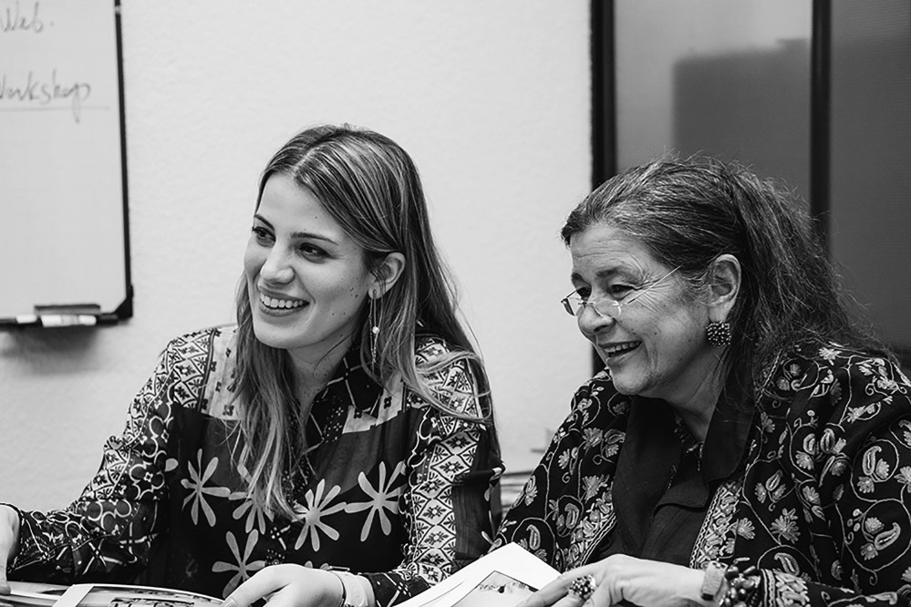
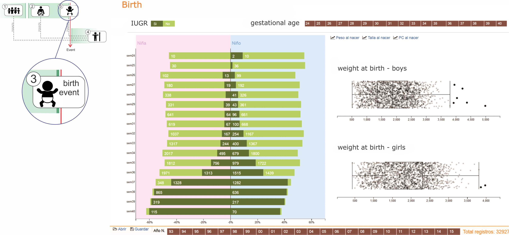

Visual tools for the exploration of growth data in a cohort of kangaroo infants during their first year of life
http://johnguerra.co/slides/kangarooBabies
Content
Proposed Process Model
- Time based events
- 4 steps Model
- Examples applications
Kangaroo babies
- Problem Kangaroo babies
- “Fundacion Canguro” or Kangaroo Foundation
- Data set
- Visual analytics task
- Insights
A Contribution with Time-series
Conclusions
Proposed Process Model
Time based events
- Presidential election
- A common factory production of goods
- Write a book
- Evolution of a disease such as diabetes
4 steps Model

Example applications
Applying the model to the problems
Presidential election

Evolution of a disease such as diabetes
Kangaroo babies
The problem
- Almost 1 million children die each year due to complications of preterm birth. Many survivors face a lifetime of disability, including learning disabilities and visual and hearing problems.
- Hypothermia and Hypoglycaemia are a great risk, also the more premature the baby, the greater the risk of respiratory distress syndrome.
- The premature baby is more susceptible to neonatal jaundice.
- They are susceptible to infection and to necrotising enteritis.
- They are susceptible to intraventricular brain haemorrhage with serious long-term effects.
Fundación Canguro
The “Fundación Canguro” or Kangaroo Foundation created in 1994 in Colombia has as the most important goal pursued to continue the evaluation of the KMC(Kangaroo Mother Care) and to facilitate the dissemination and transference of knowledge and technology associated with this technique, to all those who might benefit from it, with the highest possible quality standards.
The Experts
Dr. Nathalie Charpak, Pediatrician and maximum exponent of the KMC in the world.
Julieta Villegas, Master’s degree in Health Policy, Planning and Financing.
The Data

The Task
The goal of our tool was to be able to evaluate the growth process during the first year of life of premature infants and to identify the influence of variables like the mother’s age, education, weight, height or income in the process.
Proposed Process Model in kangaroo babies' context

1- Environment (before the event)
2- Pregnancy (development of the event)

3- Birth (the event)
4- Growth (after the event)
Insights
Selection - low per capita income
Selection - high per capita income
Selection - high per capita income
A) Feeding trends 1993-2010. B) Feeding trends 2011-2015. Vertically: feeding’s types: exclusive breastfeeding (EBF), mixed feeding (BF+F), exclusive artificial formula milk (F). Horizontally: different ages during preterm babies’ first year
Viz
Fenton 1 child
Fenton 10k children
+ OMS
Normalization
Our viz
Thank you!
- Model
- Viz
- Use case (Insights)
Video demo